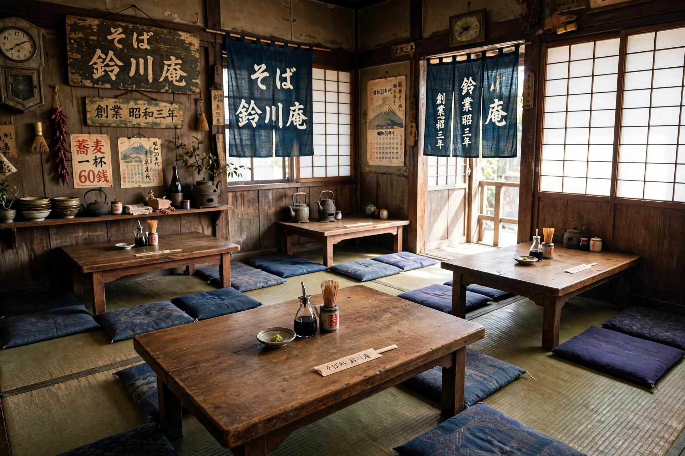

朝の看板
朝食セット
温・冷が選べる蕎麦に、日替わりご飯、とろろ、お新香が付いた朝のセット。朝メニューは11:00まで、一日の始まりにちょうどいい一膳です。
SENDAI ・ SOBA ・ SINCE 1927
朝7時半、一番町に湯気が立つ。
四代目が守る、朝蕎麦の老舗。
1927年創業。勾当台公園駅から徒歩3分、そば粉9割の細麺が自慢の小さな蕎麦屋。
一日の始まりに、温かい一杯をどうぞ。
ABOUT
大正の終わりから続く、仙台の朝の味。
創業は1927年。仙台・一番町で長く愛されてきた蕎麦屋です。いまは4代目が店に立ち、受け継がれてきた味と朝の賑わいを守り続けています。
麺はそば粉9割の細打ち。つるりとしたのど越しと、噛むほどに広がる蕎麦の香りが持ち味です。朝の一杯にも、昼の締めにもすっと寄り添う味わいです。
朝は「朝食セット」が自慢。温・冷が選べる蕎麦に、日替わりご飯、とろろ、お新香が付きます（朝メニューは11:00まで）。11時からは、創作「ねばとろばくだん蕎麦」も人気です。
imosen（いもせん）は、仙台市青葉区一番町にある老舗蕎麦屋。勾当台公園駅から徒歩3分、12席のこぢんまりした座敷で、朝7時半頃から14時頃まで営業しています。
出勤前の朝蕎麦に、昼の休憩に。最新情報は公式Instagramで発信しています。

NEWS
INFORMATION
| 店名 | imosen（いもせん） |
|---|---|
| 住所 | 〒980-0811 宮城県仙台市青葉区一番町4-5-11 |
| アクセス | 勾当台公園駅から徒歩3分 |
| 電話 | 022-223-1538 |
| 営業時間 | 7:30頃〜14:00頃（朝メニューは11:00まで） |
| 定休日 | 日曜 |
| 席数 | 12席 |
| @imosen1927 |